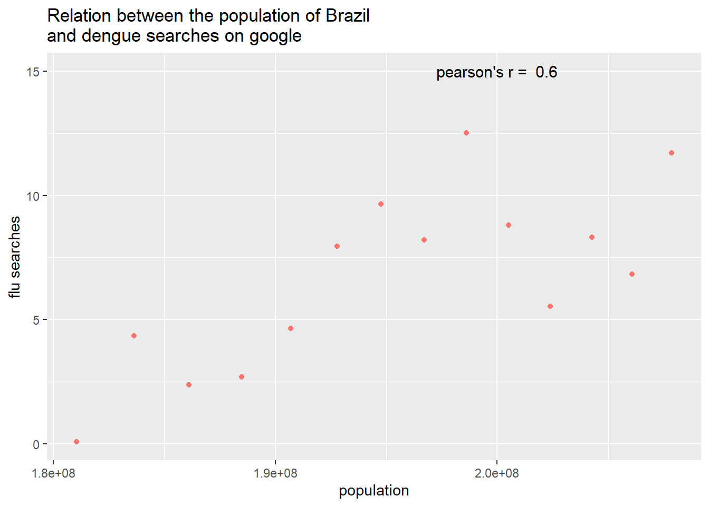

8 relational databases
In this exercise I will be using a relational database. this is a type of database that stores and provides access to data points that are related to one another. I will be using DBeaver to combine the Gapminder dataset with 2 other datasets containing flu/dengue google searches per country over the years.
I used the following libraries for this exercise:
library(png)
library(grid)
library(gridExtra)
library(DBI)
library(tidyverse)
library(readxl)
library(readr)
library(dslabs)
library(tidyverse)
library(hablar)
library(DBI)
library(RPostgreSQL)8.1 The data
The first step is to load and inspect the Flu (./data/flu_data.csv), dengue (“./data/dengue_data.csv) and gapminder data ({dslabs} package) available here
flu_data <- read_csv("https://raw.githubusercontent.com/DataScienceILC/tlsc-dsfb26v-20_workflows/main/data/flu_data.csv",
skip = 10)
head(flu_data)## # A tibble: 6 × 30
## Date Argentina Australia Austria Belgium Bolivia Brazil Bulgaria Canada
## <date> <dbl> <dbl> <dbl> <dbl> <dbl> <dbl> <dbl> <dbl>
## 1 2002-12-29 NA NA NA NA NA 174 NA NA
## 2 2003-01-05 NA NA NA NA NA 162 NA NA
## 3 2003-01-12 NA NA NA NA NA 174 NA NA
## 4 2003-01-19 NA NA NA NA NA 162 NA NA
## 5 2003-01-26 NA NA NA NA NA 131 NA NA
## 6 2003-02-02 136 NA NA NA NA 151 NA NA
## # ℹ 21 more variables: Chile <dbl>, France <dbl>, Germany <dbl>, Hungary <dbl>,
## # Japan <dbl>, Mexico <dbl>, Netherlands <dbl>, `New Zealand` <dbl>,
## # Norway <dbl>, Paraguay <dbl>, Peru <dbl>, Poland <dbl>, Romania <dbl>,
## # Russia <dbl>, `South Africa` <dbl>, Spain <dbl>, Sweden <dbl>,
## # Switzerland <dbl>, Ukraine <dbl>, `United States` <dbl>, Uruguay <dbl>dengue_data <- read_csv("https://raw.githubusercontent.com/DataScienceILC/tlsc-dsfb26v-20_workflows/main/data/dengue_data.csv",
skip = 10)
head(dengue_data)## # A tibble: 6 × 11
## Date Argentina Bolivia Brazil India Indonesia Mexico Philippines
## <date> <dbl> <dbl> <dbl> <dbl> <dbl> <dbl> <dbl>
## 1 2002-12-29 NA 0.101 0.073 0.062 0.101 NA NA
## 2 2003-01-05 NA 0.143 0.098 0.047 0.039 NA NA
## 3 2003-01-12 NA 0.176 0.119 0.051 0.059 0.071 NA
## 4 2003-01-19 NA 0.173 0.17 0.032 0.039 0.052 NA
## 5 2003-01-26 NA 0.146 0.138 0.04 0.112 0.048 NA
## 6 2003-02-02 NA 0.16 0.202 0.038 0.049 0.041 NA
## # ℹ 3 more variables: Singapore <dbl>, Thailand <dbl>, Venezuela <dbl>gap_data<- gapminder
head(gap_data)## country year infant_mortality life_expectancy fertility
## 1 Albania 1960 115.40 62.87 6.19
## 2 Algeria 1960 148.20 47.50 7.65
## 3 Angola 1960 208.00 35.98 7.32
## 4 Antigua and Barbuda 1960 NA 62.97 4.43
## 5 Argentina 1960 59.87 65.39 3.11
## 6 Armenia 1960 NA 66.86 4.55
## population gdp continent region
## 1 1636054 NA Europe Southern Europe
## 2 11124892 13828152297 Africa Northern Africa
## 3 5270844 NA Africa Middle Africa
## 4 54681 NA Americas Caribbean
## 5 20619075 108322326649 Americas South America
## 6 1867396 NA Asia Western Asiaafter inspecting the data I made the flu and dengue data tidy and alterd the data so it will be easier to merge with the Gapminder data late on.
#make flu_data tidy
flu_data_tidy<- pivot_longer(data = flu_data, cols = -c('Date'),
names_to = "country", values_to = "flu_searches")
# remove month and day from Date
flu_data_tidy$Date<- str_sub(flu_data_tidy$Date, start =1, end = 4)
#rename date to year
flu_data_tidy<- rename(flu_data_tidy, year = Date)
# group by date and country to get all searches of that year in one row
flu_data_tidy<- flu_data_tidy %>% group_by(year, country) %>% summarize(flu_searches = sum(flu_searches))
#change NA to 0 searches
flu_data_tidy[is.na(flu_data_tidy)]<- 0
# now it is good to join with gapminder
head(flu_data_tidy)## # A tibble: 6 × 3
## # Groups: year [1]
## year country flu_searches
## <chr> <chr> <dbl>
## 1 2002 Argentina 0
## 2 2002 Australia 0
## 3 2002 Austria 0
## 4 2002 Belgium 0
## 5 2002 Bolivia 0
## 6 2002 Brazil 174#make dengue_data tidy
dengue_data_tidy<- pivot_longer(data = dengue_data, cols = -c('Date'),
names_to = "country", values_to = "dengue_searches")
# remove month and day from Date
dengue_data_tidy$Date<- str_sub(dengue_data_tidy$Date, start =1, end = 4)
#rename date to year
dengue_data_tidy<- rename(dengue_data_tidy, year = Date)
# group by date and country to get all searches of that year in one row
dengue_data_tidy<- dengue_data_tidy %>% group_by(year, country) %>% summarize(dengue_searches = sum(dengue_searches))
#change NA to 0 searches
dengue_data_tidy[is.na(dengue_data_tidy)]<- 0
# now it can be joined with gapminder and flu_data
head(dengue_data_tidy)## # A tibble: 6 × 3
## # Groups: year [1]
## year country dengue_searches
## <chr> <chr> <dbl>
## 1 2002 Argentina 0
## 2 2002 Bolivia 0.101
## 3 2002 Brazil 0.073
## 4 2002 India 0.062
## 5 2002 Indonesia 0.101
## 6 2002 Mexico 0After making both the flu data and dengue data tidy, I fixed the variables in terms of data type, class and values. I changed these datasets so that the data type, class and values are the same as the Gapminder data to avoid problems in merging later on
#fixing variables so they match with each other and coincide in terms of data type, class and values
#flu_data
flu_data_tidy<- as.data.frame(flu_data_tidy) %>% convert(int(year))
flu_data_tidy$country<- as.factor(flu_data_tidy$country)
head(flu_data_tidy)## year country flu_searches
## 1 2002 Argentina 0
## 2 2002 Australia 0
## 3 2002 Austria 0
## 4 2002 Belgium 0
## 5 2002 Bolivia 0
## 6 2002 Brazil 174#dengue_data
dengue_data_tidy <- as.data.frame(dengue_data_tidy) %>% convert(int(year))
dengue_data_tidy$country<- as.factor(dengue_data_tidy$country)
head(dengue_data_tidy)## year country dengue_searches
## 1 2002 Argentina 0.000
## 2 2002 Bolivia 0.101
## 3 2002 Brazil 0.073
## 4 2002 India 0.062
## 5 2002 Indonesia 0.101
## 6 2002 Mexico 0.000After I finised fixing al the datasets I stored as both csv and rds with the following code
#store data as csv and rds
#flu data
write.csv(flu_data_tidy, "data\\flu_data_tidy.csv", row.names=FALSE)
saveRDS(flu_data_tidy, file = "data/flu_data_tidy.rds")
#dengue data
write.csv(dengue_data_tidy, "data\\dengue_data_tidy.csv", row.names=FALSE)
saveRDS(dengue_data_tidy, file = "data/dengue_data_tidy.rds")
#gapminder data
write.csv(gap_data, "data\\gap_data.csv", row.names=FALSE)
saveRDS(gap_data, file = "data/gap_data.rds")The next step was to setup a database in DBeaver. I called the database workflowsdb. ## Using SQL Using RPostgreSQL, I inserted the datasets from earlier in the workflowsdb dataset
con
dbWriteTable(con, "flu_data_tidy", flu_data_tidy, overwrite = TRUE)
dbWriteTable(con, "dengue_data_tidy", dengue_data_tidy, overwrite = TRUE)
dbWriteTable(con, "gap_data", gap_data, overwrite = TRUE)Figure 8.1: Fig. 1: inspecting the contents of the tables with SQL in DBeaver
I also inspected the data using R with the Head() function as seen below
flu_data_tidy %>% head()## year country flu_searches
## 1 2002 Argentina 0
## 2 2002 Australia 0
## 3 2002 Austria 0
## 4 2002 Belgium 0
## 5 2002 Bolivia 0
## 6 2002 Brazil 174dengue_data_tidy %>% head()## year country dengue_searches
## 1 2002 Argentina 0.000
## 2 2002 Bolivia 0.101
## 3 2002 Brazil 0.073
## 4 2002 India 0.062
## 5 2002 Indonesia 0.101
## 6 2002 Mexico 0.000gap_data %>% head()## country year infant_mortality life_expectancy fertility
## 1 Albania 1960 115.40 62.87 6.19
## 2 Algeria 1960 148.20 47.50 7.65
## 3 Angola 1960 208.00 35.98 7.32
## 4 Antigua and Barbuda 1960 NA 62.97 4.43
## 5 Argentina 1960 59.87 65.39 3.11
## 6 Armenia 1960 NA 66.86 4.55
## population gdp continent region
## 1 1636054 NA Europe Southern Europe
## 2 11124892 13828152297 Africa Northern Africa
## 3 5270844 NA Africa Middle Africa
## 4 54681 NA Americas Caribbean
## 5 20619075 108322326649 Americas South America
## 6 1867396 NA Asia Western AsiaBecause of the changes I made in the flu data and dangue data in beginning. I could easily merge the data of both flu and dengue to the gapminder data. I used inner join so that if there is not a match between the country,year and flu/dengue searches it is removed from the table. I called the merged dataset “results” This is seen in the image below
Figure 8.2: Fig. 2: inspecting the contents of the tables with SQL in DBeaver
8.2 inspecting merged data
I loaded the joined data in with the following code:
results <- dbReadTable(con, "results")head(results)## # A tibble: 6 × 11
## country year infant_mortality life_expectancy fertility population gdp
## <chr> <dbl> <dbl> <dbl> <dbl> <dbl> <dbl>
## 1 Argentina 2015 11.1 76.5 2.15 43416755 NA
## 2 Bolivia 2015 30.6 73.2 3.14 10724705 NA
## 3 Brazil 2015 14.6 74.4 1.78 207847528 NA
## 4 Mexico 2015 11.3 75.9 2.13 127017224 NA
## 5 Argentina 2014 11.5 76.3 2.16 42980026 NA
## 6 Bolivia 2014 31.7 72.9 3.18 10561887 NA
## # ℹ 4 more variables: continent <chr>, region <chr>, flu_searches <dbl>,
## # dengue_searches <dbl>After reviewing the results data i used summary() to show descriptive statistics. It displays minimum, 1st quartile, median, mean, 3rd quartile, and maximum values for numeric variables, and counts for factors.
# Summary statistics
summary(results)## country year infant_mortality life_expectancy
## Length:56 Min. :2002 Min. :11.10 Min. :68.70
## Class :character 1st Qu.:2005 1st Qu.:14.25 1st Qu.:72.40
## Mode :character Median :2008 Median :16.10 Median :74.35
## Mean :2008 Mean :21.64 Mean :73.83
## 3rd Qu.:2012 3rd Qu.:25.88 3rd Qu.:75.40
## Max. :2015 Max. :53.70 Max. :76.50
##
## fertility population gdp continent
## Min. :1.780 Min. : 8653343 Min. :8.752e+09 Length:56
## 1st Qu.:2.158 1st Qu.: 31098258 1st Qu.:1.848e+11 Class :character
## Median :2.265 Median : 74497526 Median :5.291e+11 Mode :character
## Mean :2.505 Mean : 90395962 Mean :4.538e+11
## 3rd Qu.:2.712 3rd Qu.:140524316 3rd Qu.:6.943e+11
## Max. :3.980 Max. :207847528 Max. :9.446e+11
## NA's :16
## region flu_searches dengue_searches
## Length:56 Min. : 0 Min. : 0.000
## Class :character 1st Qu.: 7041 1st Qu.: 1.464
## Mode :character Median :10151 Median : 3.889
## Mean :19459 Mean : 4.644
## 3rd Qu.:19816 3rd Qu.: 7.713
## Max. :70979 Max. :16.739
## 8.3 visualization
At last I made various ggplots to visualize data from the joined dataset The first two ggplot are the basic ggplot showing the flu and dengue searches over the year
library(ggplot2)
library(ggbreak)
library(gganimate)
library(viridis)
results %>% ggplot(aes(x = year, y = flu_searches)) +
geom_line(aes(colour = country))+
labs(title = "Flu searches over the years per country",
y = "flu searches",
x = "year") 
results %>% ggplot(aes(x = year, y = dengue_searches)) +
geom_line(aes(colour = country)) +
labs(title = "dengue searches over the years per country",
y = "dengue searches",
x = "year") Next I joined the ggplots to become one with the following code:
Next I joined the ggplots to become one with the following code:
results_tidy<- results %>%
rename(
flu = flu_searches,
dengue = dengue_searches
)
results_tidy<- pivot_longer(data = results_tidy, cols = c('flu', 'dengue'),
names_to = "disease", values_to = "searches")
results_tidy## # A tibble: 112 × 11
## country year infant_mortality life_expectancy fertility population gdp
## <chr> <dbl> <dbl> <dbl> <dbl> <dbl> <dbl>
## 1 Argentina 2015 11.1 76.5 2.15 43416755 NA
## 2 Argentina 2015 11.1 76.5 2.15 43416755 NA
## 3 Bolivia 2015 30.6 73.2 3.14 10724705 NA
## 4 Bolivia 2015 30.6 73.2 3.14 10724705 NA
## 5 Brazil 2015 14.6 74.4 1.78 207847528 NA
## 6 Brazil 2015 14.6 74.4 1.78 207847528 NA
## 7 Mexico 2015 11.3 75.9 2.13 127017224 NA
## 8 Mexico 2015 11.3 75.9 2.13 127017224 NA
## 9 Argentina 2014 11.5 76.3 2.16 42980026 NA
## 10 Argentina 2014 11.5 76.3 2.16 42980026 NA
## # ℹ 102 more rows
## # ℹ 4 more variables: continent <chr>, region <chr>, disease <chr>,
## # searches <dbl>ggplot(data=results_tidy, aes(x=year, y=log10(searches), color=country, shape = disease)) +
geom_line() +
geom_point()+
ylim(0.0, 5)
I also made a ggplot showing the relation between the population of mexico and flu searches on google
mexico <-results %>% filter(country == "Mexico")
cor_coefficient_mex<- round(cor.test(mexico$population, mexico$flu_searches, method=c("pearson"))$estimate,1)
mexico %>% ggplot(aes(x = population, y = flu_searches)) +
geom_point(aes(colour = "red"), show.legend = FALSE) +
labs(title = "Relation between the population of mexico \nand flu searches on google",
y = "flu searches",
x = "population") +
annotate("text", x = 108000000, y = 65000, size=4,
label = paste("pearson's r = ", cor_coefficient_mex))
and i made this ggplot showing Relation between the population of Brazil and dengue searches on google
Brazil <-results %>% filter(country == "Brazil")
cor_coefficient_brazil<- round(cor.test(Brazil$population, Brazil$dengue_searches, method=c("pearson"))$estimate,1)
Brazil %>% ggplot(aes(x = population, y = dengue_searches)) +
geom_point(aes(colour = "blue"), show.legend = FALSE) +
labs(title = "Relation between the population of Brazil \nand dengue searches on google",
y = "flu searches",
x = "population") +
annotate("text", x = 200000000, y = 15, size=4,
label = paste("pearson's r = ", cor_coefficient_mex))